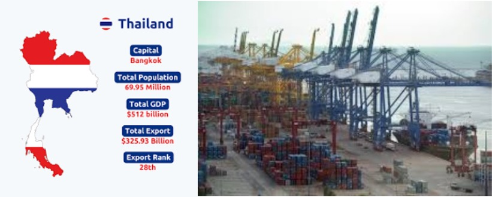
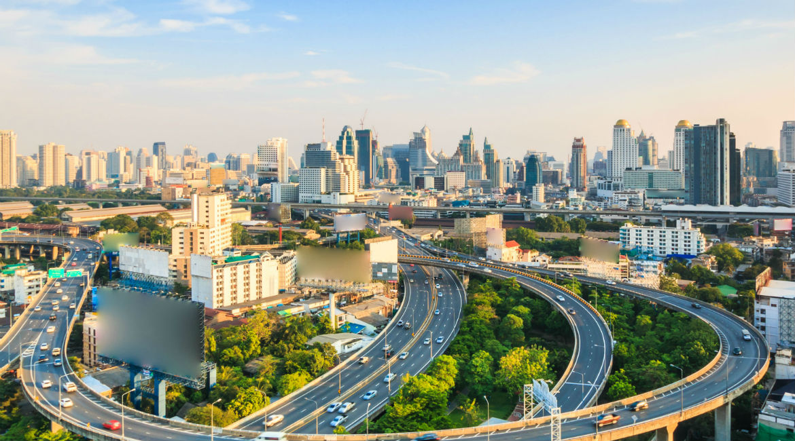
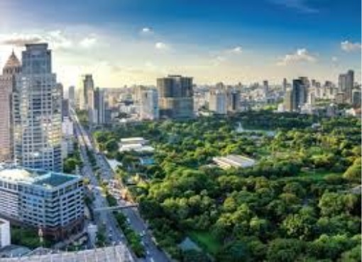

Thailand has emerged as one of the most developed and economically vibrant nations in Southeast Asia. Its transformation from an agrarian society to a dynamic economy has been driven by strategic policies, strong governance, and investment in key sectors. Here are the major measures Thailand has taken to achieve its remarkable development.
Political Stability and Global Trade Partnerships
While Thailand has faced political challenges, its ability to maintain strong trade partnerships and foreign relations has played a key role in economic stability.
-
Membership in ASEAN, ensuring regional trade cooperation.
-
Free Trade Agreements (FTAs) with key economies like China, Japan,
and the European Union.

Economic Policies and Industrialization
One of the key drivers of Thailand’s development has been its pro-business economic policies. The government has actively promoted industrialization through initiatives like:
-
Thailand 4.0: A strategic plan focused on innovation, technology, and high-value
industries such as biotechnology, robotics, and smart electronics.
-
Special Economic Zones (SEZs): These areas provide tax incentives, infrastructure,
and streamlined regulations to attract foreign investment.
-
Export-Oriented Growth: Thailand has become a global hub for automobile
manufacturing, electronics, and agriculture-based exports.
Investment in Infrastructure
Thailand has continuously invested in modern infrastructure to facilitate economic growth:
-
High-Speed Rail and Metro Systems: Expanding connectivity within the country
and beyond, linking key economic hubs.
-
Smart Cities and Digital Transformation: Developing cities like Bangkok and
Chiang Mai into smart cities with integrated technology solutions.
-
Suvarnabhumi Airport Expansion: Ensuring that Thailand remains a major
aviation hub in the region.

Strong Tourism Industry
Thailand has capitalized on its rich cultural heritage, stunning landscapes, and vibrant cities to build a thriving tourism industry. The government has:
-
Developed world-class tourism infrastructure, including luxury resorts and
eco-tourism initiatives.
-
Implemented visa reforms to attract international travelers.
-
Invested in sustainable tourism to balance economic benefits with
environmental conservation.
Focus on Education and Innovation
A well-educated workforce has been crucial to Thailand’s development. Measures include:
-
Increasing public investment in STEM education and vocational training.
-
Partnering with global institutions to enhance research and innovation.
-
Establishing Innovation Hubs that support startups and technology-driven
enterprises.
Agricultural Modernization and Food Security
Although industrialization is key, Thailand has not neglected its agricultural sector. It remains one of the world’s top exporters of rice, seafood, and tropical fruits. The government has promoted:
-
Smart farming techniques to increase productivity and sustainability.
-
Investment in agritech and bioengineering to enhance food security.

Sustainable Development and Environmental Protection
Thailand has recognized the importance of sustainable growth by implementing green policies:
-
Renewable Energy Initiatives: Promoting solar, wind, and bioenergy projects.
-
Pollution Control Measures: Reducing plastic waste and improving air quality
in major cities.
-
Forest Conservation Programs to protect biodiversity and combat deforestation.
Conclusion
Thailand’s development is a result of strategic planning, economic diversification, and investment in technology and education. By focusing on innovation, sustainability, and infrastructure, the country continues to thrive as a major player in Asia’s economic landscape. With continued reforms and smart governance, Thailand’s future looks even brighter.
What are your thoughts on Thailand’s development strategies? Share in the comments below!
- Thailand Diaries